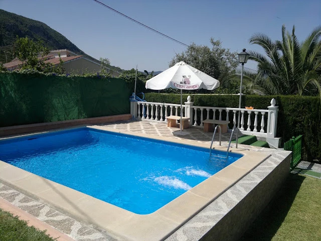
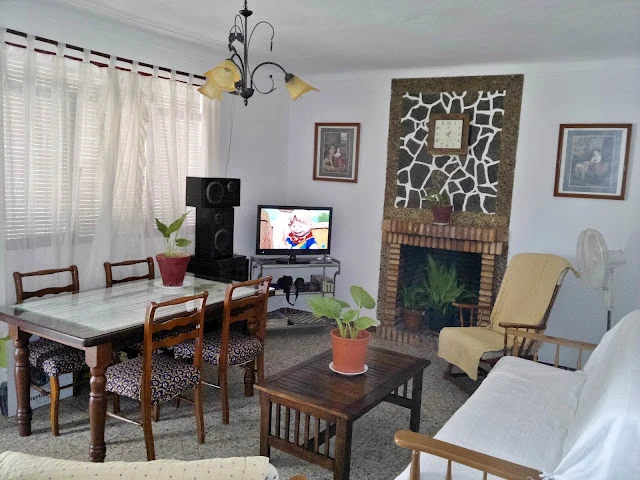
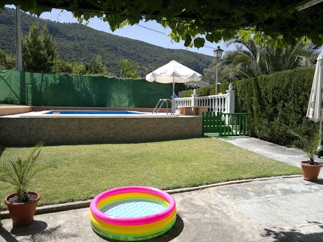

EL BOSQUE · SIERRA DE CÁDIZ
Las
Buganvillas
Una casa encalada,
la sierra alrededor
y unos días por delante.

 La sombra de la parra.
La sombra de la parra.BIENVENIDOS A LAS BUGANVILLAS
Unos días para
hacer vida de casa.
Preparar algo en la cocina, alargar la sobremesa o salir a tomar el aire. Las Buganvillas es una casa rural en El Bosque, en la Sierra de Cádiz, con espacios para compartir dentro y fuera.
El porche, la piscina y el salón con chimenea forman parte de la casa. Aquí puedes conocer sus rincones antes de organizar tu estancia.
Mira la casa por dentroEL ÁLBUM DE LA CASA
Así son nuestros rincones.
Dentro, fuera y a tu ritmo.
Toca una foto para verla completa.







PARA TU ESTANCIA
Lo cotidiano,
bien cerca.
- Huéspedes
- 8
- Dormitorios
- 2
- Baño
- 1
Piscina y terraza
Cocina con menaje
Chimenea
Barbacoa
Lavadora
Aparcamiento
Datos recogidos en la ficha de ACARUCA. Consulta las condiciones de la piscina y de admisión de mascotas antes de venir.

SALIR A CONOCER EL BOSQUE
Un pueblo blanco.
Mucho por pasear.
Las Buganvillas está en El Bosque, uno de los municipios del Parque Natural Sierra de Grazalema. El río Majaceite y los pueblos de la sierra ponen paisaje a los días fuera de casa.
Para preparar tus paseos, consulta la información oficial del parque y el estado de sus senderos.
Conocer el parque naturalPLANEA TU ESTANCIA
¿Te vienes a
Las Buganvillas?
Cuéntanos las fechas que tienes en mente y cuántos sois.
Te informaremos sobre disponibilidad y condiciones.
11670 El Bosque, CádizAbrir en Google Maps
Si necesitas indicaciones para la llegada,
escríbenos y te ayudamos.